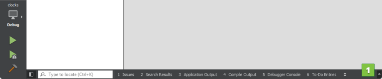

Opening Projects
Qt Creator stores information that it needs to build projects in a .user file. If Qt Creator cannot find the file when you open an existing project, it prompts you to enter the information. If you created the project by using another Qt Creator instance, Qt Creator asks whether you want to use the old settings. The settings are specific to the development environment, and should not be copied from one environment to another. Therefore, we recommend that you click No and enter the information again in the Configure Project tab.
The Configure Project tab displays a list of kits for building and running projects, that are installed on the development PC and configured in Tools > Options > Kits. Select the kits that you want to build and run the project with.

Even if you do not intend to build the project, the C++ and QML code models need a Qt version and compiler to offer code completion. To specify them, select the Options link, or select Tools > Options > Kits.
Qt for Python projects rely on the experimental language server client for code completion, highlighting, and other useful features.
If Qt Creator cannot find an existing build for a particular kit, it starts out from a clean slate, and creates new debug and release build configurations in the specified directory. Qt Creator suggests a name and location for the directory that you can change.
If you have built the project before, Qt Creator can use the existing build configuration to make the exact same build as found in the directory available to Qt Creator. To import a build, specify a directory in the Import Build from section and select Import.
You can edit the build configuration later. For more information, see Editing Build Configurations.
To open a project:
- Select File > Open File or Project (Ctrl+O or Cmd+O on macOS) and select the project file for the project to open: .pro (qmake), CMakeLists.txt (CMake), .qbs (Qbs), pyproject (Python), or Makefile.am (Autotools, experimental).
- In the Configure Project tab, select kits for building and running your project, and click Configure Project.
You can use the following keyboard shortcuts to open projects, depending on the mode you are currently in:
- In all modes, select Ctrl+O (Cmd+O on macOS) to open the Open File dialog, where you can select a project file to open a project.
- In all modes, except the Help mode, select Ctrl+Shift+O (Cmd+Shift+O on macOS) to open the Load Project dialog, where you can select a project file to open a project.
- In the Welcome mode, Projects tab, select Ctrl+Shift+number (Cmd+Shift+number on macOS), where the number is the number of a project in the list of recently opened projects.
Qt Creator parses all the source files in the project and performs a semantic analysis to build up the information that it needs for functions such as navigation and finding usages. A progress bar is displayed during parsing. To show or hide detailed progress information, select Toggle Progress Details (1).
